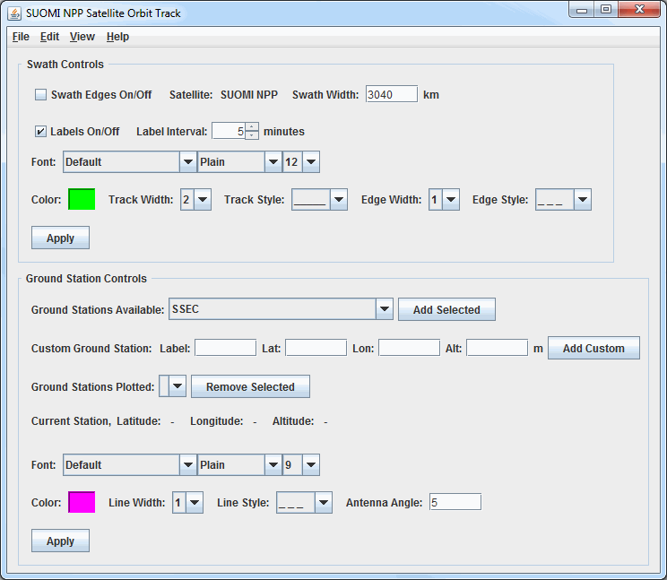
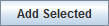

Overview
The controls for the Satellite Orbit Track display are used to adjust image displays of orbit track data:

Image 1: Satellite Orbit Track Controls Window
Image 1: Satellite Orbit Track Controls Window
Properties
- Swath Controls - Controls for the swath line and edges. Once these items are changed, Apply must be clicked for the change to be applied to the display.
- Swath Edges On/Off - Enables or disables the swath edge lines from drawing in the display. By default this is disabled, meaning no swath edge lines are drawn in the display. The width of the swath is set by the Swath Width menu item.
- Satellite - Lists the satellite whose tracks are currently plotted. This is the satellite that was selected in the Fields panel of the Field Selector
- Swath Width - Sets the width of the swath lines (in kilometers) in the display. Many satellites will have a value in this field by default, however it can be added or modified by the user.
- Labels On/Off - Enables or disables the time labels on the track line. By default this is enabled, meaning the time labels are drawn.
- Label Interval - Sets the interval (in minutes) of the time labels along the track line. By default, this is set to 5 minutes. Decrease this value to show more times, or increase it to show fewer.
- Font - Sets the font, style, and size of the time labels along the track line. By default, this is set to "Default / Plain / 12".
- Color - Sets the color of the swath line, edges, and time labels. By default, this is set to light green.
- Track Width - Sets the width of the track line. By default this is set to 2.
- Track Style - Sets the line style of the track line. By default, this is set to a solid line.
- Edge Width - Sets the width of the swath edge lines. By default this, this is set to a dashed line.
- Edge Style - Sets the line style of the swath edge lines. By default, this is set to a dashed line.
 - Applies any changes to the above menu items to the display.
- Applies any changes to the above menu items to the display.- Ground Station Controls - Controls for the ground station(s). Once these items are changed, Apply must be clicked for the change to be applied to the display.
- Ground Stations Available - Lists the ground stations configured with McIDAS-V. Once the station is selected, click Add Selected  to add the the ground station to the Main Display window.
- Custom Ground Station - Adds a user-defined ground station to the display.
- Label - Sets the label of the ground station (e.g. Mesa, AZ).
- Lat - Sets the latitude of the ground station.
- Lon - Sets the longitude of the ground station.
- Alt - Sets the altitude of the ground station in meters. The valid range is -500 to 8850 meters.
- - Adds the custom ground station to the Main Display window.
- Ground Stations Plotted - Selects the active ground station plotted in the Main Display window. Any changes to the menu items below this will be applied to the this ground station. To remove a ground station from the display, select it with this menu and click .
- Current Station - Lists the latitude, longitude, and altitude of the station currently selected in the Ground Stations Plotted menu.
- Font - Sets the font, style, and size of the ground station label. By default, this is set to "Default / Plain / 9".
- Color - Sets the color of the ground station label and ring. By default, this is set to pink.
- Line Width - Sets the width of the ground station ring. By default this is set to 1.
- Line Style - Sets the line style of the ground station ring. By default, this is set to a dashed line.
- Antenna Angle - Selects the antenna angle of the ground station. By default, this is set to 5 degrees, with a valid range of 5 to 90 degrees allowed. The higher the elevation angle, the smaller (in diameter) the ring around the ground station.
- - Applies any changes to the above menu items to the display.